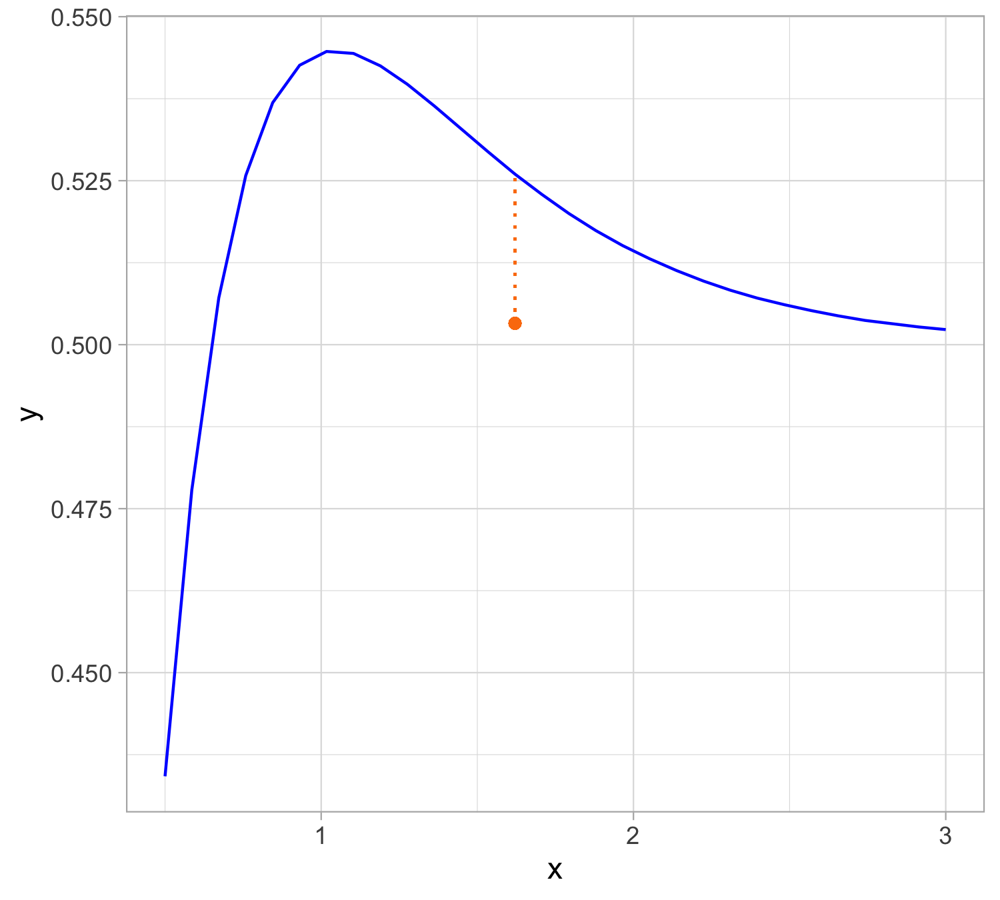
The Bias-Variance Trade-off
Introduction to Statistical Learning - PISE
This unit will cover the following topics:
- Simple linear regression
- Polynomial regression
- Bias-variance trade-off
- Cross-validation
Yesterday’s and tomorrow’s data
The signal and the noise
Let us presume that yesterday we observed n = 30 pairs of data (x_i, y_i).
Data were generated according to Y_i = f(x_i) + \epsilon_i, \quad i=1,\dots,n, with each y_i being the realization of Y_i.
The \epsilon_1,\dots,\epsilon_n are iid “error” terms, such that \mathbb{E}(\epsilon_i)=0 and \mathbb{V}\text{ar}(\epsilon_i)=\sigma^2 = 10^{-4}.
Here f(x) is a regression function (signal) that we leave unspecified .
Tomorrow we will get a new x. We wish to predict Y.
Yesterday’s data
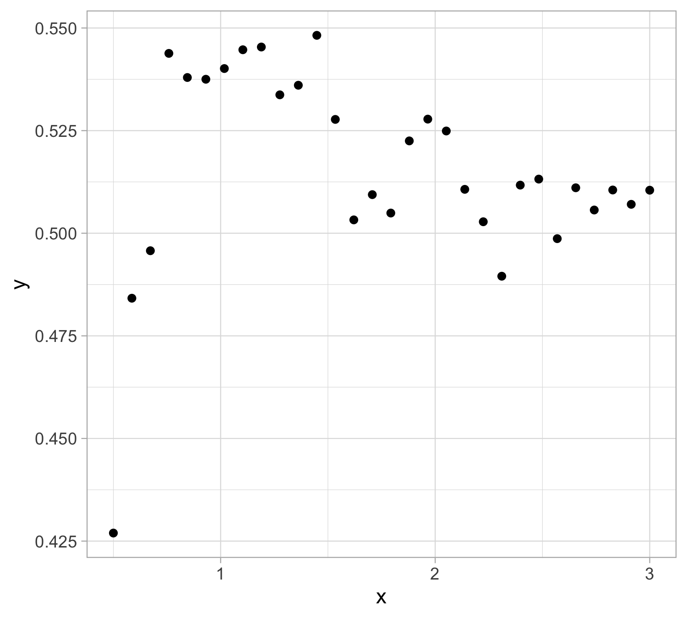
Simple linear regression
The function f(x) is unknown, therefore, it should be estimated.
A simple approach is using simple linear regression: f(x; \beta) = \beta_0 + \beta_1 x, namely f(x) is approximated with a straight line where \beta_0 and \beta_1 are two unknown constants that represent the intercept and slope, also known as coefficients or parameters
Giving some estimates \hat{\beta}_0 and \hat{\beta}_1 for the model coefficients, we predict future values using \hat{y} = \hat\beta_0 + \hat\beta_1 x where \hat{y} indicates a prediction of Y on the basis of X=x. The hat symbol denotes an estimated value.
Estimation of the parameters by least squares
Let \hat y_i = \hat\beta_0 + \hat\beta_1 x_i be the prediction for Y based on the ith value of X. Then e_i = y_i - \hat y_i represents the ith residual
We define the residual sum of squares (\mathrm{RSS}) as \mathrm{RSS} = e_1^2+e_2^2+\ldots+e_n^2, or equivalently as \mathrm{RSS} = (y_1 - \hat\beta_0 - \hat\beta_1 x_1)^2+(y_2 - \hat\beta_0 - \hat\beta_1 x_2)^2+\ldots+ (y_n- \hat\beta_0 - \hat\beta_1 x_n)^2.
The least squares approach chooses \hat{\beta}_0 and \hat{\beta}_1 to minimize the . The minimizing values can be shown to be \begin{aligned} \hat{\beta}_1 &= \frac{\sum_{i=1}^{n}(x_i - \bar x)(y_i - \bar y)}{\sum_{i=1}^{n}(x_i - \bar x)^2}\\ \hat{\beta}_0 &= \bar y - \beta_1 \bar x \end{aligned} where \bar y = \frac{1}{n}\sum_{i=1}^n y_i and \bar x = \frac{1}{n}\sum_{i=1}^n x_i are the sample means.
Least squares fit : \hat y = 0.520627 - 0.003 x
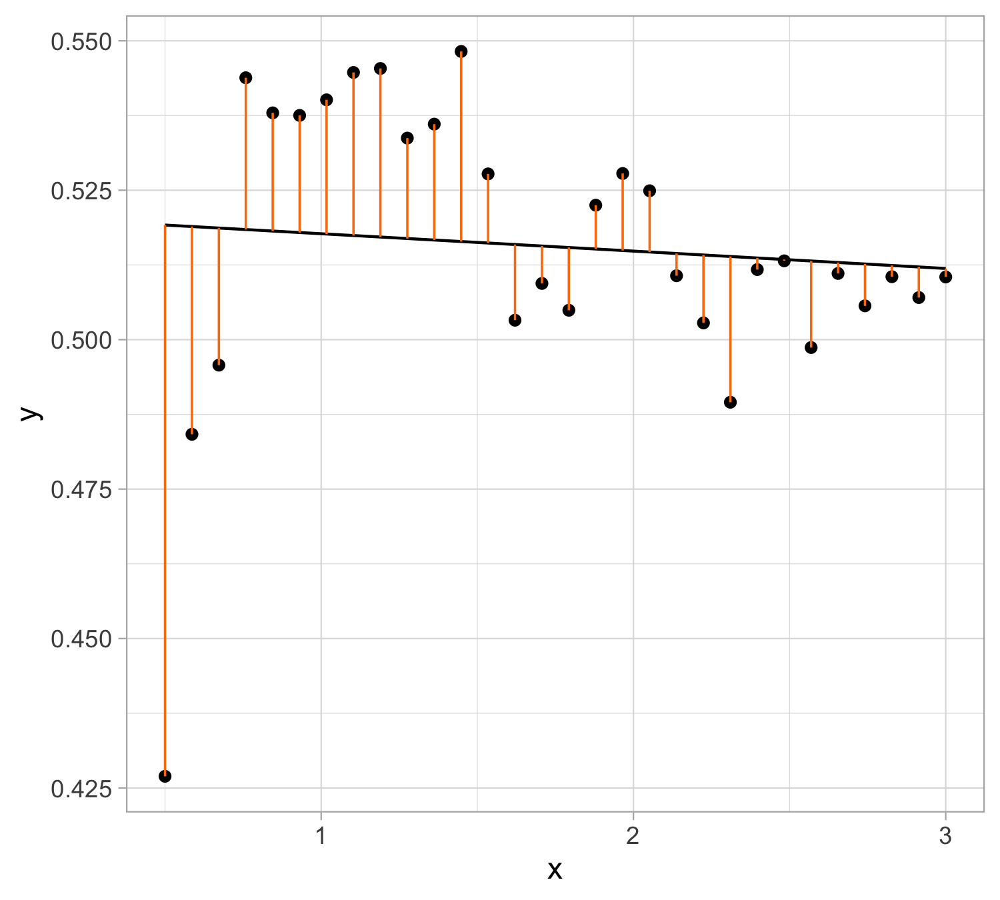
Assessing the Overall Accuracy of the Model
We compute the mean squared error (\mathrm{MSE}) \mathrm{MSE} = \frac{1}{n} \sum_{i=1}^{n}(y_i - \hat{y}_i)^2 = \frac{1}{n}\mathrm{RSS}
R-squared or fraction of variance explained is R^2 = \frac{\mathrm{TSS} - \mathrm{RSS}}{\mathrm{TSS}} = 1 - \frac{\mathrm{RSS}}{\mathrm{TSS}} where \mathrm{TSS} = \sum_{i=1}^{n}(y_i - \bar y)^2 is the total sum of squares.
| Quantity | Value |
|---|---|
| RSS | 0.0171726 |
| MSE | 0.00057242 |
| TSS | 0.01731363 |
| R^2 | 0.008146 |
Polynomial regression
The function f(x) is unknown, therefore, it should be estimated.
A simple approach is using polynomial regression: f(x; \beta) = \beta_0 + \beta_1 x + \beta_2 x^2 + \cdots + \beta_d x^{d}, namely f(x) is approximated with a polynomial of degree d
This model is linear in the parameters: ordinary least squares can be applied.
How do we choose the degree of the polynomial d?
Without clear guidance, in principle, any value of d \in \{0,\dots,n-1\} could be appropriate.
Let us compare the mean squared error (MSE) on yesterday’s data (training) \text{MSE}_{\text{train}} = \frac{1}{n}\sum_{i=1}^n\{y_i -f(x_i; \hat{\beta})\}^2, or alternatively R^2_\text{train}, for different values of d…
Estimating Polynomial Regression
Let
\mathbf{y} = (y_1,\dots,y_n)^\top
be the vector of observed responses, and let \mathbf{X} \in \mathbb{R}^{n \times (d+1)} be the design matrix whose i-th row is
(1, x_i, x_i^2, \dots, x_i^d).
Ordinary least squares (OLS) estimation chooses the coefficient vector
\hat{\beta} = \begin{pmatrix} \hat{\beta}_0 \\ \hat{\beta}_1 \\ \vdots \\ \hat{\beta}_d \end{pmatrix} \in \mathbb{R}^{d+1}
to minimize the residual sum of squares (RSS):
\hat{\beta} = \arg\min_{\beta \in \mathbb{R}^{d+1}} \sum_{i=1}^n \bigl(y_i - f(x_i; \beta)\bigr)^2. Thus, OLS finds the coefficients that make the fitted polynomial as close as possible (in squared distance) to the observed data.
Solution
The solution to this optimization problem is
\hat{\beta} = (\mathbf{X}^\top \mathbf{X})^{-1} \mathbf{X}^\top \mathbf{y},
We avoid matrix algebra whenever possible, but in the OLS formula it is useful to understand matrix multiplication and inversion.
Matrix Multiplication
Suppose
\mathbf{A} \in \mathbb{R}^{r \times d}, \quad \mathbf{B} \in \mathbb{R}^{d \times s}.
Then the product \mathbf{A}\mathbf{B} is an r \times s matrix defined only if the number of columns of \mathbf{A} equals the number of rows of \mathbf{B}.
The (i,j)-th element of \mathbf{A}\mathbf{B} is
(\mathbf{A}\mathbf{B})_{ij} = \sum_{k=1}^{d} a_{ik} b_{kj}.
That is:
- Take the i-th row of \mathbf{A},
- Take the j-th column of \mathbf{B},
- Multiply corresponding elements,
- Sum the results.
Matrix Inverse
A square matrix \mathbf{A} \in \mathbb{R}^{p \times p} has an inverse \mathbf{A}^{-1} if
\mathbf{A}\mathbf{A}^{-1} = \mathbf{A}^{-1}\mathbf{A} = \mathbf{I}_p,
where \mathbf{I}_p is the p \times p identity matrix.
The inverse exists only if:
- \mathbf{A} is square,
- \mathbf{A} is nonsingular (its columns are linearly independent).
Yesterday’s data, polynomial regression
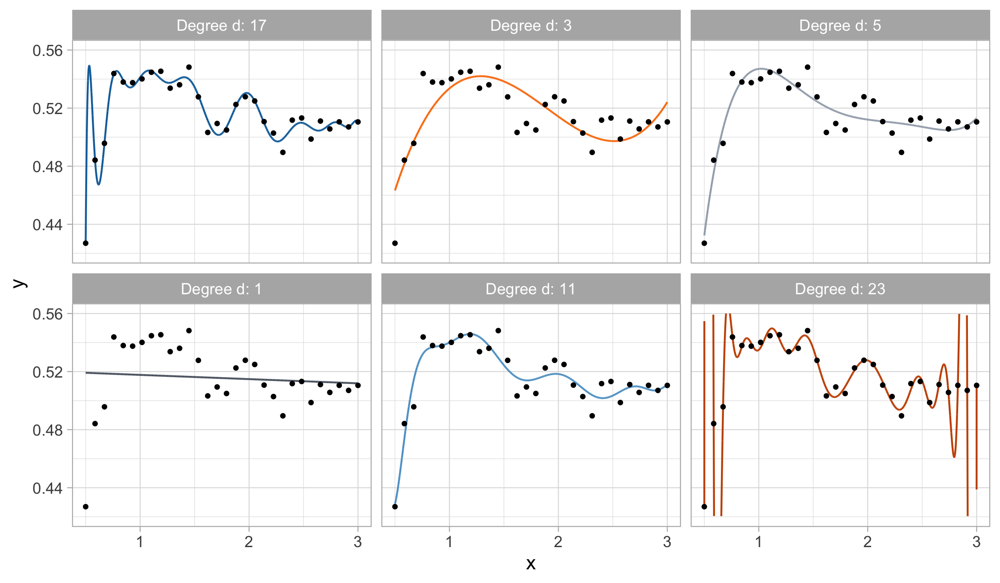
Yesterday’s data, goodness of fit
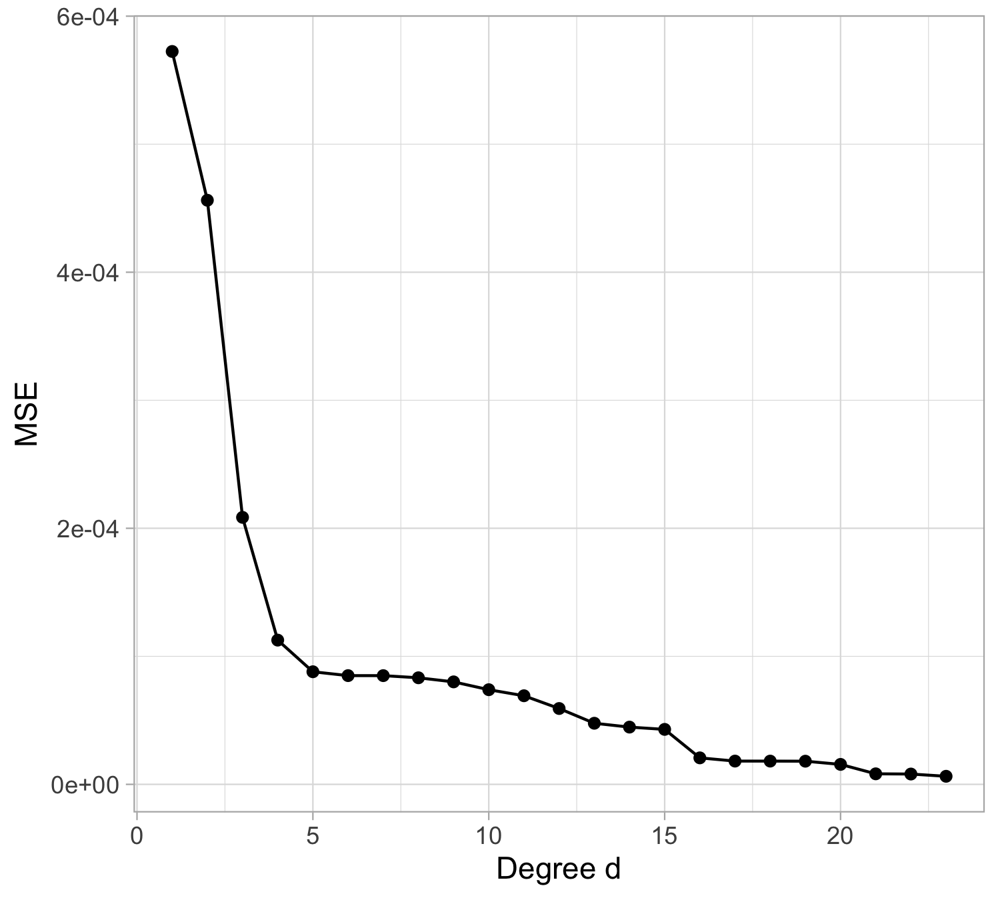
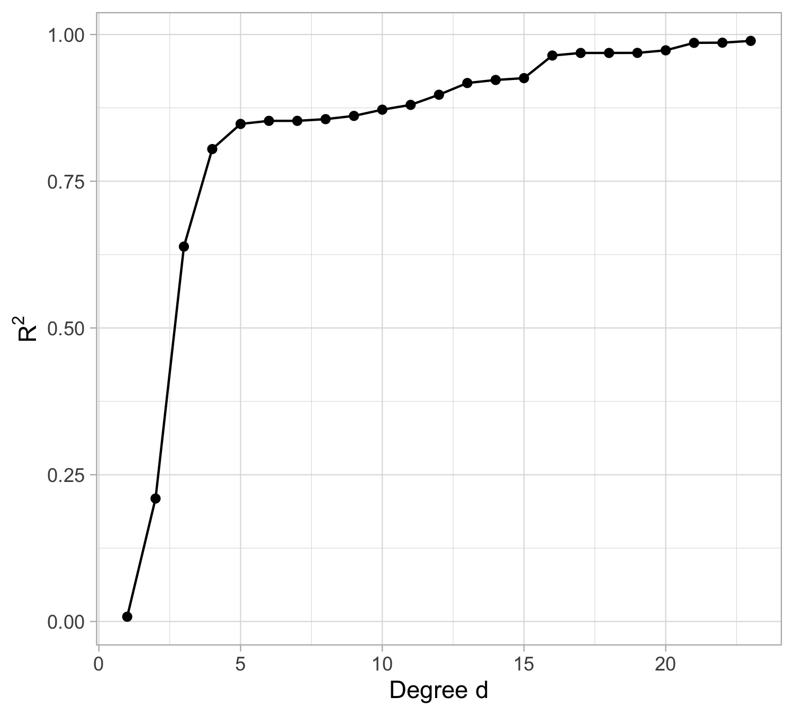
Yesterday’s data, polynomial interpolation (d = n-1)

Yesterday’s data, tomorrow’s prediction
The MSE decreases as the number of parameter increases; similarly, the R^2 increases as a function of d. It can be proved that this always happens using ordinary least squares.
One might be tempted to let d as large as possible to make the model more flexible…
Taking this reasoning to the extreme would lead to the choice d = n-1, so that \text{MSE}_\text{train} = 0, \qquad R^2_\text{train} = 1, i.e., a perfect fit. This procedure is called interpolation.
However, we are not interested in predicting yesterday data. Our goal is to predict tomorrow’s data, i.e. a new set of n = 30 points: (x_1, \tilde{y}_1), \dots, (x_n, \tilde{y}_n), using \hat{y}_i = f(x_i; \hat{\beta}), where \hat{\beta} is obtained using yesterday’s data.
Remark. Tomorrow’s r.v. \tilde{Y}_1,\dots, \tilde{Y}_n follow the same scheme as yesterday’s data.
Tomorrow’s data, polynomial regression
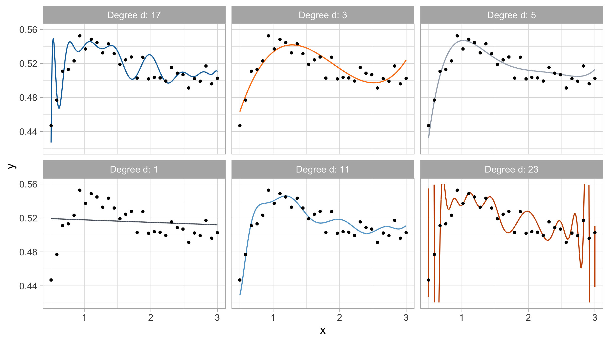
Tomorrow’s data, goodness of fit
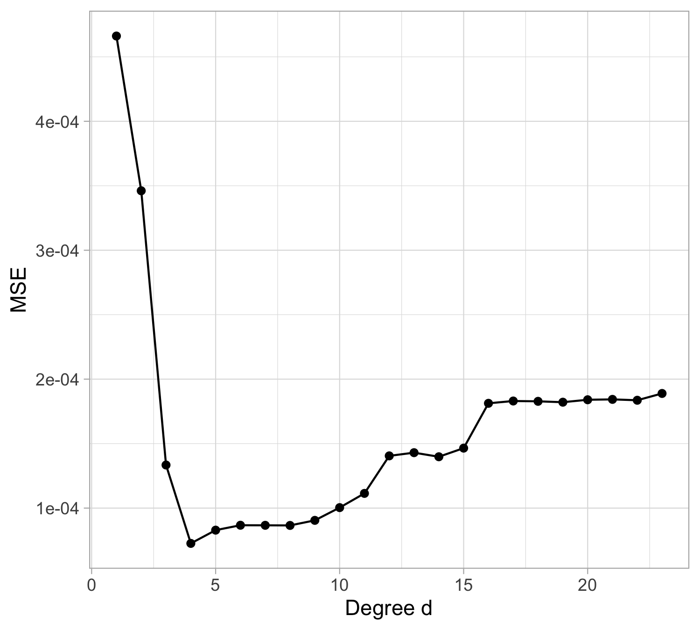
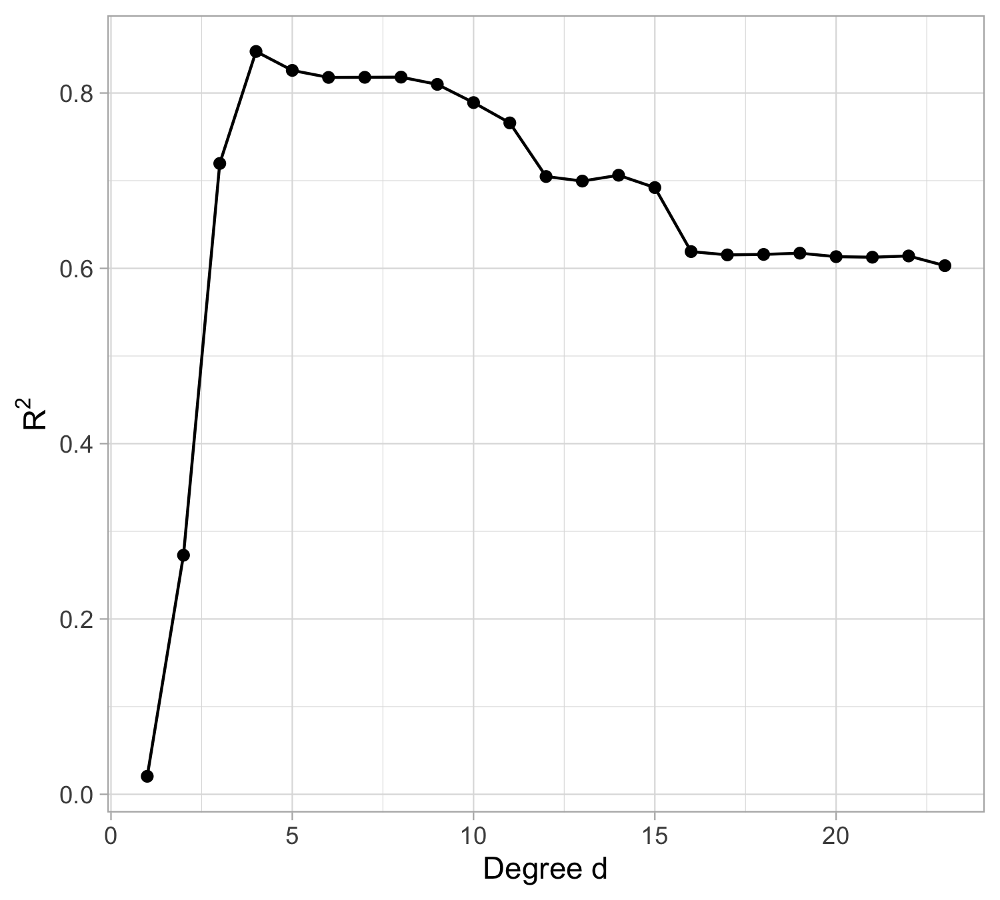
MSE on training and test set

The Bias-Variance Trade-Off
Prediction error
Suppose we predict \tilde Y_i by \hat{f}(x_i) where \hat f is estimated from the training data.
Our goal is to minimize the (expected) prediction error \mathbb{E}[\text{MSE}_{\text{test}}] = \frac{1}{n}\sum_{i=1}^n\mathbb{E}\Big[ (\tilde{Y}_i -\hat f(x_i) )^2 \Big], where the response variable is given by a signal-plus-noise model, Y = f(x) + \varepsilon, with f(x) representing the true underlying signal and \varepsilon the random error term
Sources of Error
Irreducible Error Can we make predictions without committing errors? No — not even if we knew the true function f, because of the presence of the error term \varepsilon
Bias How far (on average) is the estimator \hat f from the true function f? For example, if we estimate a linear regression line when the true relationship is quadratic.
Variance How variable is the estimator \hat f? In other words, how much would our estimates change if we computed them using different training sets?
Reducible and Irreducible Error
\mathbb{E}\big[(\tilde Y_i - \hat{f}(x_i))^2\big] = \mathbb{E}\big[(f(x_i) + \tilde \varepsilon_i - \hat{f}(x_i))^2\big].
Expanding and using \mathbb{E}[\tilde \varepsilon_i] = 0,
= \underbrace{\mathbb{E}\big[(f(x_i) - \hat{f}(x_i))^2\big]}_{\text{Reducible error}} + \underbrace{\mathrm{Var}(\tilde \varepsilon_i)}_{\text{Irreducible error}}.
The prediction error is the sum of a reducible and an irreducible component.
Reducible error: the bias-variance tradeoff
The reducible error can be further decomposed into the squared bias and the variance of the estimator \hat{f}.
\begin{aligned} \mathbb{E}\big[(f(x_i) - \hat{f}(x_i))^2\big] &= \mathbb{E}\big[(f(x_i) - \mathbb{E}\hat{f}(x_i) + \mathbb{E}\hat{f}(x_i) - \hat{f}(x_i))^2\big] \\ &= \underbrace{\big(f(x_i) - \mathbb{E}\hat{f}(x_i)\big)^2}_{\text{Bias}^2} + \underbrace{\mathrm{Var}\big(\hat{f}(x_i)\big)}_{\text{Variance}}. \end{aligned}
Bias and variance are competing quantities: reducing one typically increases the other.
Hence, we must choose a trade-off between bias and variance.
Typically as the flexibility of \hat f increases, its variance increases, and its bias decreases.
Low flexibility: high bias, low variance
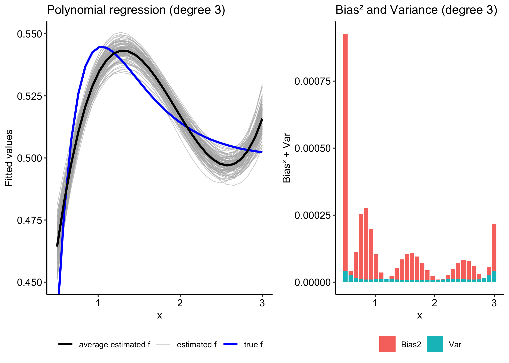
High flexibility: low bias, high variance
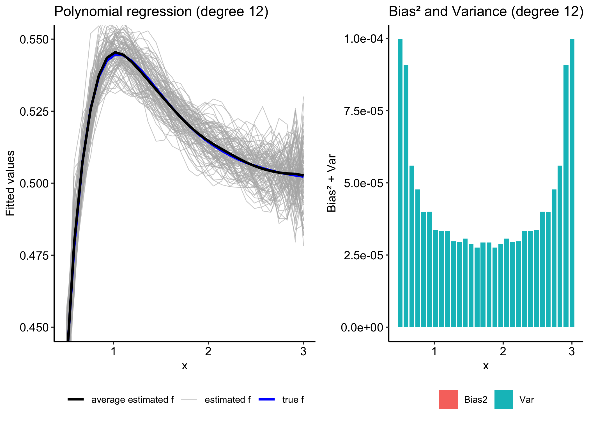
Optimal choice

Bias-Variance as a function of flexibility
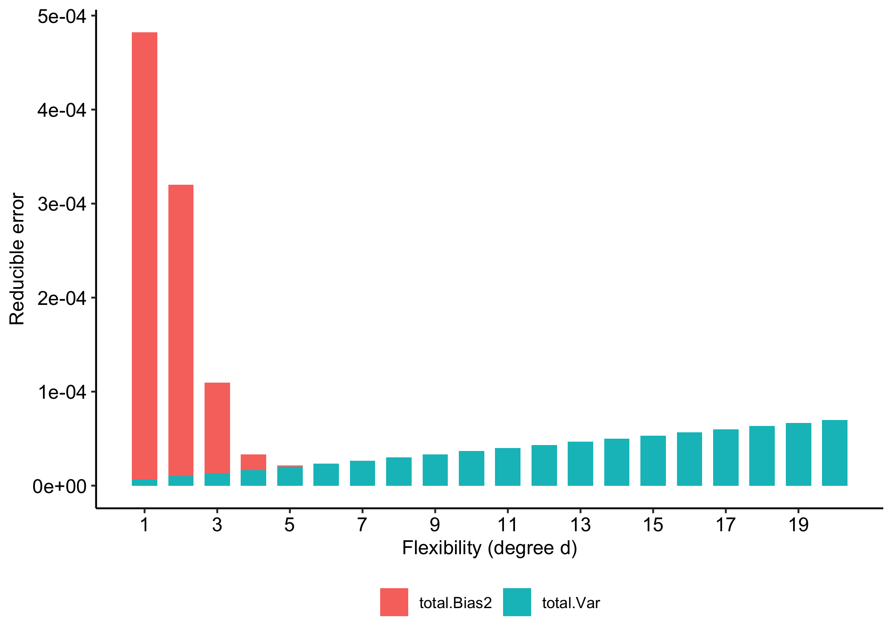
Comments and remarks
Reducible error = Bias² + Variance
Models with low bias tend to have high variance.
Models with low variance tend to have high bias.
On one hand, even if our model is unbiased,
the prediction error can still be large if the model is highly variable.On the other hand, a model that predicts a constant has zero variance but high bias.
To achieve good prediction performance, we must balance bias and variance.
Cross-validation
Training Error versus Test error
Recall the distinction between the test error and the training error:
The test error is the average error that results from using a statistical learning method to predict the response on a new observation, one that was not used in training the method.
In contrast, the training error can be easily calculated by applying the statistical learning method to the observations used in its training.
But the training error rate often is quite different from the test error rate, and in particular the former can dramatically underestimate the latter.
Training- versus Test-Set Performance

Figure from the book The Elements of Statistical Learning: Data Mining, Inference, and Prediction. Second Edition February 2009. Trevor Hastie, Robert Tibshirani, Jerome Friedman.
Validation-set approach
Estimate the test error by holding out a subset of the training observations from the fitting process
Here we randomly divide the available set of samples into two parts: a [training set]]{.blue} and a validation set.
The model is fit on the training set, and the fitted model is used to predict the responses for the observations in the validation set.
The resulting validation-set error provides an estimate of the test error.
The Validation process

A random splitting into two halves: left part is training set, right part is validation set
Example: yesterday-tomorrow data
We randomly split the 30 observations into two sets: a [training set]]{.blue} with 15 data points and a [validation set]]{.orange} with the remaining 15 observations.
We fit the polynomial regression model on the training set and compute the MSE on the validation set.
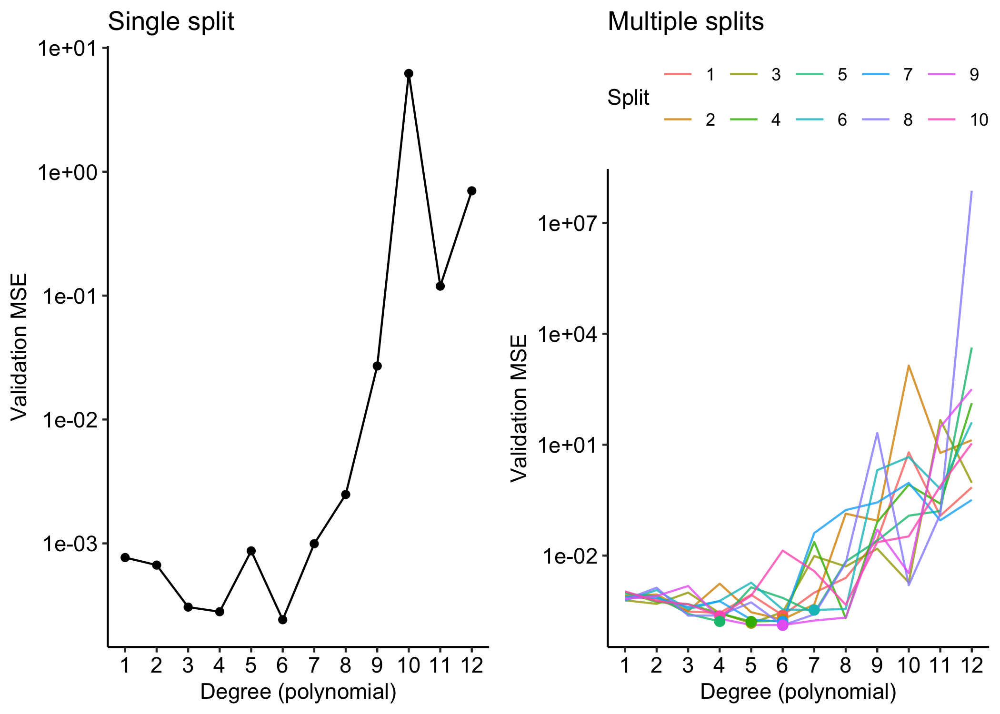
Drawbacks of validation set approach
The validation estimate of the test error can be highly variable, depending on precisely which observations are included in the training set and which observations are included in the validation set.
In the validation approach, only a subset of the observations — those that are included in the training set rather than in the validation set — are used to fit the model. This suggests that the validation set error may tend to overestimate the test error for the model fit on the entire data set.
K-fold Cross-validation
Widely used approach for estimating test error.
Estimates can be used to select best model, and to give an idea of the test error of the final chosen model.
Idea is to randomly divide the data into K equal-sized parts. We leave out part k, fit the model to the other K−1 parts (combined), and then obtain predictions for the left-out kth part.
This is done in turn for each part k= 1,2,...K, and then the results are combined.
K-fold Cross-validation in detail
Divide data into K roughly equal-sized parts (K = 5 here)

The details
Let the K parts (folds) be C_1, C_2, \dots, C_K,
where C_k denotes the indices of the observations in fold k.Let n_k be the number of observations in fold k. Without loss of geenrality, suppose n_k = n/K.
For each fold k, fit the model using all data excluding C_k, and compute the validation mean squared error \text{MSE}_k = \frac{1}{n_k} \sum_{i \in C_k} \bigl(y_i - \hat{y}_i^{-k}\bigr)^2, where \hat{y}_i^{-k} is the prediction for observation i obtained from the model trained without fold k.
The K-fold cross-validation estimate is their average: \text{CV}(K) = \frac{1}{K}\sum_{k=1}^{K} \text{MSE}_k.
Common choices are K=5 or K=10 It is quite evident that a larger K requires more computations.
Leave-One-Out Cross-Validation
- The maximum possible value for K is n, yielding leave-one-out cross-validation (LOOCV).

Example: yesterday-tomorrow data
The LOOCV is hard to implement because it requires the estimation of n different models.
However, in ordinary least squares there is a brilliant computational shortcut.
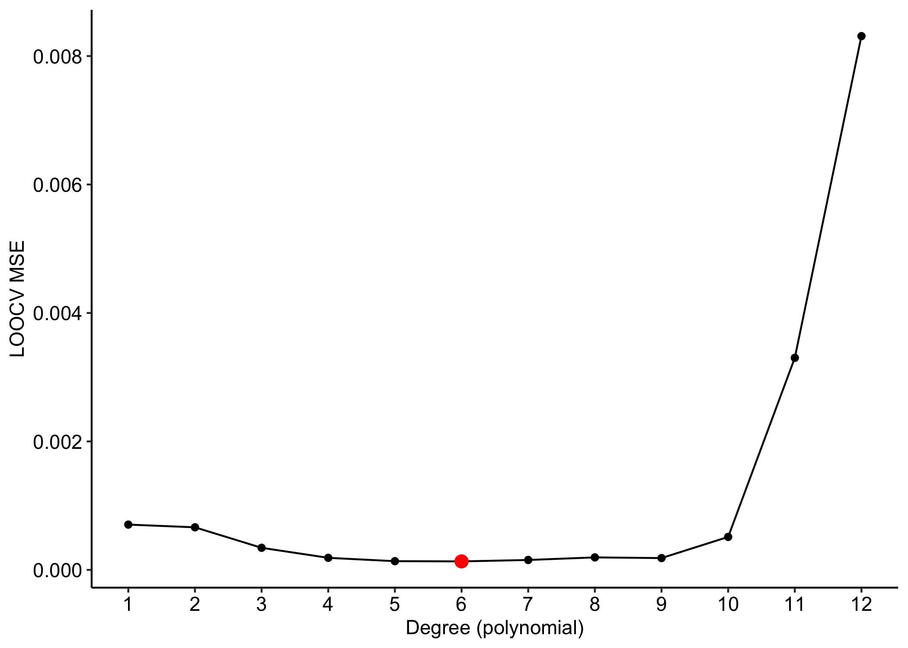
On the Choice of K
A K-fold cross-validation with K = 5 or K = 10 provides an upward biased estimate of the true prediction error \mathrm{Err}, because each model is trained on fewer observations than the full dataset (either 4/5 or 9/10 of the data).
Leave-one-out cross-validation (LOOCV) has very small bias, since each model is trained on n - 1 observations.
However, it has high variance, because it averages n highly positively correlated error estimates.Overall, the choice of K is largely context-dependent, balancing bias, variance, and computational cost.
Required readings from the textbook and course materials
- Chapter 2: Statistical Learning
- 2.2 Assessing Model Accuracy
- 2.2.1 Measuring the Quality of Fit
- 2.2.2 The Bias-Variance Trade-Off
- Chapter 5: Resampling Methods
- 5.1 Cross-Validation
- 5.1.1 The Validation Set Approach
- 5.1.2 Leave-One-Out Cross-Validation
- 5.1.3 k-Fold Cross-Validation
- 5.1 Cross-Validation
- Chapter 7: Moving Beyond Linearity
- 7.1 Polynomial Regression
Video SL 2.3 Model Selection and Bias Variance Tradeoff - 10:05
Video SL 5.1 Cross Validation - 14:02
Video SL 5.2 K-fold Cross Validation - 13:34
Video SL 7.1 Polynomials and Step Functions - first 7 minutes
Comments and remarks
The mean squared error on tomorrow’s data (test) is defined as \text{MSE}_{\text{test}} = \frac{1}{n}\sum_{i=1}^n\{\tilde{y}_i -f(x_i; \hat{\beta})\}^2, and similarly the R^2_\text{test}. We would like the \text{MSE}_{\text{test}} to be as small as possible.
For small values of d, an increase in the degree of the polynomial improves the fit. In other words, at the beginning, both the \text{MSE}_{\text{train}} and the \text{MSE}_{\text{test}} decrease.
For larger values of d, the improvement gradually ceases, and the polynomial follows random fluctuations in yesterday’s data, which are not observed in the new sample.
An over-adaptation to yesterday’s data is called overfitting, which occurs when the training \text{MSE}_{\text{train}} is low but the test \text{MSE}_{\text{test}} is high.
Yesterday’s dataset is available from the website of the textbook Azzalini and Scarpa. (2013):